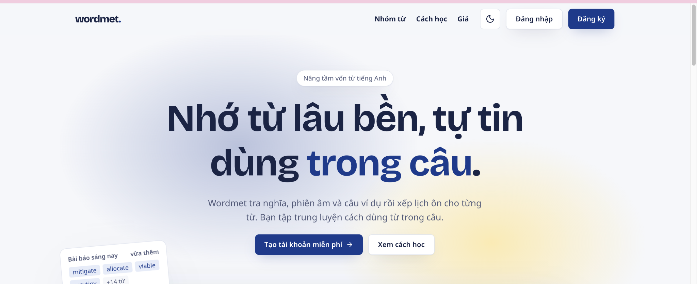
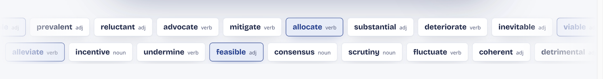
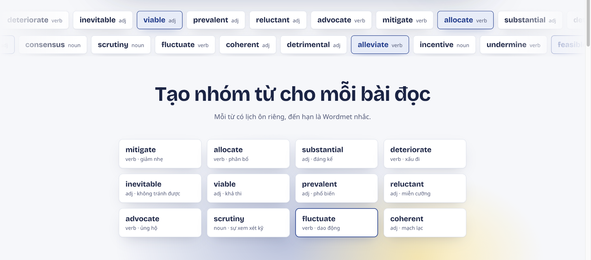
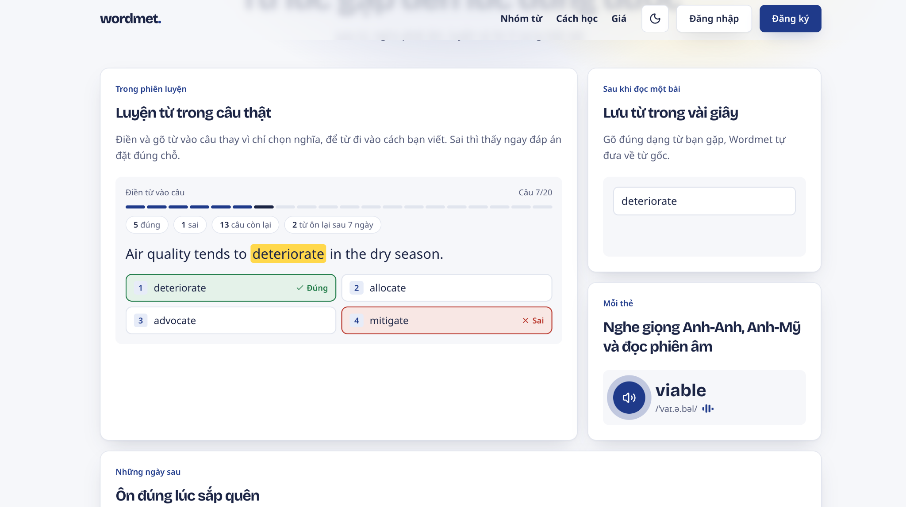

Landing và màn luyện tập: sửa theo góp ý (18/11/2026)
Mỗi mục có ảnh Trước (lấy từ PDF góp ý) và bản Sau dựng bằng đúng màu và font của app. Đây là mock-up, chưa phải code. Bấm "Chế độ tối" ở góc trên để xem bản tối.
Đề xuất cho 8 góp ý
| # | Góp ý | Đề xuất | Sửa ở đâu |
|---|---|---|---|
| 1 | Hero: "trong câu" khác màu, dấu chấm khác màu | Tiêu đề một màu. Dấu chấm đã bỏ ở commit 81f63d87. | Landing |
| 2 | Hai hàng chip trượt ngang, có chip trông như bấm được | Bỏ hẳn dải chip. Các từ đó đã có ở section nhóm từ ngay dưới. | Landing |
| 3 | "Tạo nhóm từ cho mỗi bài đọc" chỉ là 12 thẻ từ, không thấy "bài đọc" hay "nhóm" | Vòng cung chồng thẻ nhóm như trong app, tự chuyển nhóm sau 3,5 giây. Nhóm ở giữa hiện các từ ngay trên thẻ, không kèm nghĩa. 5 nhóm là chủ đề phổ biến có sẵn trong app, tên tiếng Anh; tiêu đề đổi thành "Học theo nhóm chủ đề". | Landing |
| 4 | Ô số 1–4 khó đọc trên nền xanh và đỏ | Khi đã trả lời, ô số đổi sang nền trắng, chữ và viền cùng màu với dòng (xanh hoặc đỏ). | Landing và app (cùng kiểu ô số) |
| 5 | "Câu 7/20" và "13 câu còn lại" lặp thông tin | Bỏ hàng chip. Giữ một dòng như thanh phiên thật trong app: loại câu, "7/20", ✓5, ✗1, rồi thanh tiến độ. | Landing |
| 6 | Câu hỏi không nổi bật hơn thanh tiến độ và đáp án | Câu hỏi to hơn (26 px, font tiêu đề), cách xa dòng trên và các đáp án. Trong app câu hỏi đã nằm ở thẻ riêng với chữ lớn, nên không sửa app. | Landing |
| 7 | Nền vàng đậm sau khi chọn đúng trông như cảnh báo | Từ điền vào chỗ trống dùng ô xanh "đúng", giống app. Màu vàng chỉ còn ở câu ví dụ trên thẻ của hero (vai trò bút dạ quang, không phải trạng thái đúng/sai). | Landing |
| 8 | Bố cục "Cách học" không theo thứ tự trước, trong và sau khi học | Một cột bước 1 → 4 từ trên xuống: Lưu từ → Nghe → Luyện → Ôn. Mỗi bước: chữ bên trái, minh họa bên phải. Trên điện thoại, minh họa nằm dưới chữ. | Landing |
1. Tiêu đề hero một màu
Người góp ý thấy "trong câu" khác màu là lạ. Bỏ màu nhấn để tiêu đề đọc liền một câu. Phần minh họa ngay dưới đã cho thấy "dùng trong câu".

Nhớ từ lâu bền, tự tin dùng trong câu
Wordmet tra nghĩa, phiên âm và câu ví dụ rồi xếp lịch ôn cho từng từ. Bạn tập trung luyện cách dùng từ trong câu.
2–3. Bỏ dải chip, vẽ lại section nhóm từ
Dải chip trượt ngang bị bỏ. Section nhóm từ (bản 3, theo góp ý 19/11) dùng vòng cung chồng thẻ nhóm của trang "Nhóm của bạn" trong app, tự chuyển nhóm; nhóm ở giữa hiện các từ ngay trên thẻ. Các nhóm là chủ đề có sẵn trong app, nên tiêu đề đổi thành "Học theo nhóm chủ đề".


Học theo nhóm chủ đề
Chọn chủ đề và trình độ, Wordmet tạo sẵn nhóm từ. Mỗi từ có lịch ôn riêng.
- Giống app: chồng thẻ nhóm xếp trên vòng cung, màu theo nhóm, số từ ở đầu thẻ, các thẻ phía sau tạo cảm giác một chồng.
- Khác app: nhóm ở giữa hiện các từ ngay trên thẻ, từng từ nổi lên lần lượt, không kèm nghĩa; không hiện số thẻ chờ. Dưới vòng cung ghi loại nhóm và trình độ.
- 5 nhóm là chủ đề có thật trong app (tên tiếng Anh, như danh sách chủ đề đã chốt 14/11): Travel, Food & Drink, Work & Jobs, Body & Health và bộ IELTS. Chọn vì chúng lặp lại ở hầu hết danh sách chủ đề của các app học từ (PREP, Drops, Lumetest) và có nhiều từ nhất trong nhãn CEFR-J; IELTS là bộ kỳ thi người học Việt tìm nhiều. Các từ trên thẻ lấy từ CEFR-J 1.5 đúng nhãn chủ đề đó; số từ chỉ là số mẫu.
- Tự chuyển sang nhóm kế sau 3,5 giây. Dừng khi rê chuột vào; bấm thẻ bên cạnh, mũi tên hoặc vuốt để chuyển tay. Người bật "giảm chuyển động" thì không tự chuyển, từ hiện sẵn.
4–7. Câu luyện: ô số, dòng tiến độ, câu hỏi, màu đáp án
Bản Sau giống thanh phiên thật trong app: một dòng có loại câu, số câu, ✓ và ✗. Câu hỏi là thứ lớn nhất. Từ điền vào dùng ô xanh. Ô số trên dòng đúng và sai đổi sang nền trắng để dễ đọc.
Air quality tends to deteriorate in the dry season.
Air quality tends to deteriorate in the dry season.
Mục 4 cũng sửa trong app (apps/web/src/ui/AnswerOption.tsx): cùng thay đổi ô số như bản Sau, phần còn lại của màn luyện tập giữ nguyên.
8. "Từ lúc gặp đến lúc dùng được": các bước theo thứ tự
Bản cũ đặt "Luyện" to nhất bên trái, trong khi bước đầu tiên là "Lưu từ" lại nằm bên phải. Bản Sau đi từ trên xuống theo đúng thứ tự người học trải qua, có số bước và đường nối.

Từ lúc gặp đến lúc dùng được
Lưu từ, nghe phát âm, luyện và ôn ở cùng một nơi.
- 1
Sau khi đọc một bài
Lưu từ trong vài giây
Gõ đúng dạng từ bạn gặp, Wordmet tự đưa về từ gốc.
deteriorateddeteriorateverb · xấu đi - 2
Mỗi thẻ
Nghe giọng Anh-Anh, Anh-Mỹ và đọc phiên âm
viable/ˈvaɪ.ə.bəl/ - 3
Trong phiên luyện
Luyện từ trong câu thật
Điền và gõ từ vào câu thay vì chỉ chọn nghĩa, để từ đi vào cách bạn viết. Sai thì thấy ngay đáp án đặt đúng chỗ.
Air quality tends to deteriorate in the dry season.
1deteriorate2allocate3advocate4mitigate - 4
Những ngày sau
Ôn đúng lúc sắp quên
Mỗi ngày chỉ ôn những từ đến hạn. Nhớ thì lịch giãn ra, quên thì ôn lại sớm.
- 1 ngàyôn lần đầu
- 3 ngàynhớ lần hai
- 7 ngàyquen mặt
- 14 ngàydùng được
- 30 ngàynhớ lâu
Bước 4 bỏ ô "đang sáng" cố định; hiệu ứng các ô sáng lần lượt khi cuộn tới vẫn giữ như hiện tại.